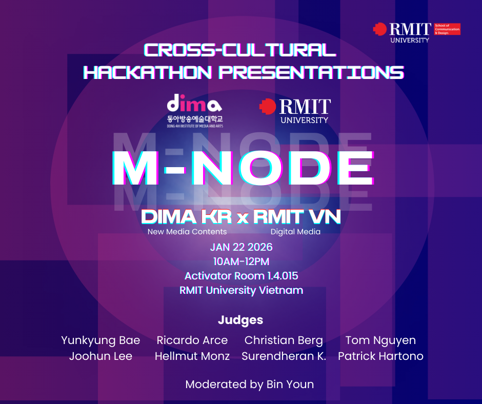
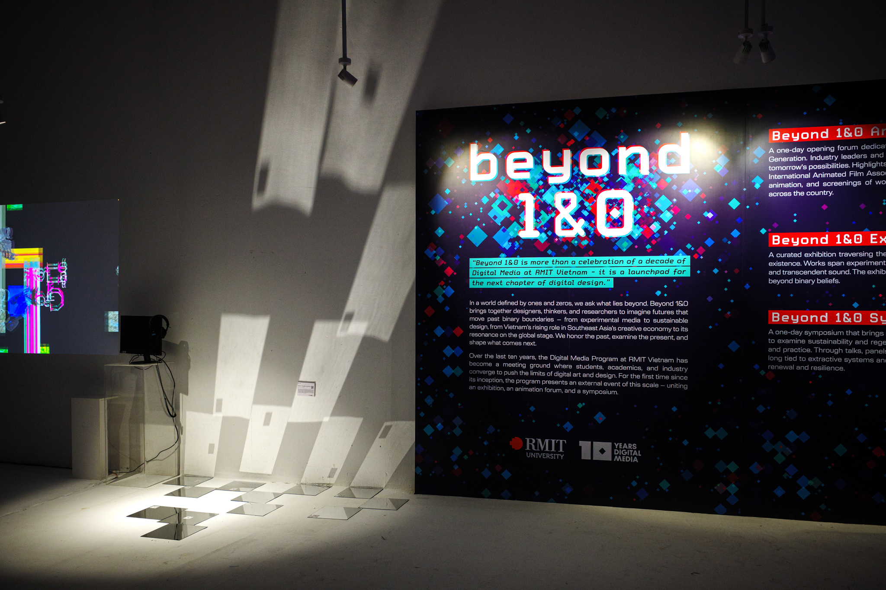
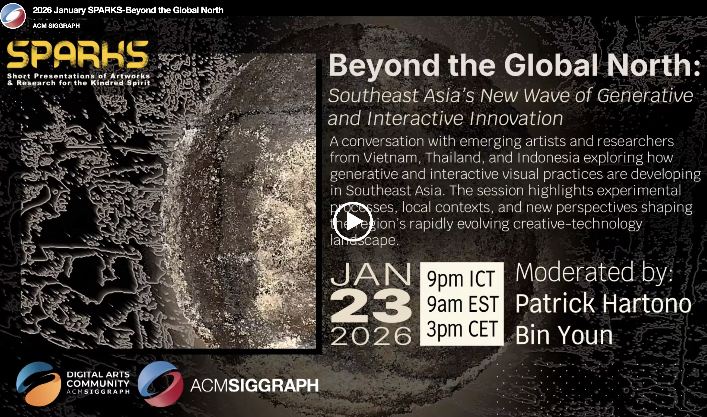
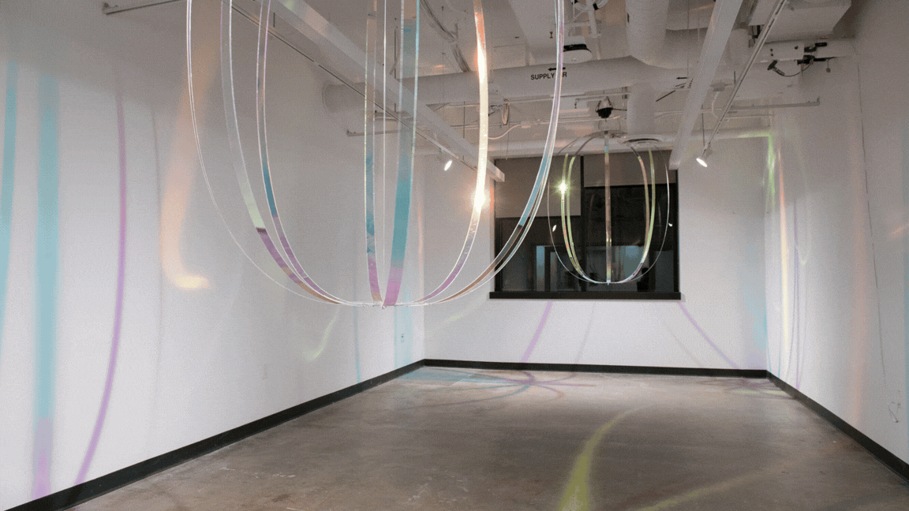

Featured

Five-day hackathon between Dong-Ah Institute (Korea) and RMIT Vietnam Digital Media.


Explore
Each practice is a world — bridging through water and land

Installations, lens-based media, sculpture, and poetic spatial encounters
Photography pedagogy, the rễ-root framework, and collaborative workshops
Academic publications, conference presentations, and committee service
About
Bin Youn is a Korean multimedia artist and educator based in Vietnam, whose practice bridges lens-based media, poetic spatial installation, and participatory environments. Currently serving as Course Coordinator and Associate Lecturer in Digital Media at RMIT University Vietnam.
Her practice examines displacement, alienation, and technological intimacy through ephemeral encounters, investigating how alienation itself can become a generative force across species, technological, and cultural boundaries.
Education
MFA, California State University Long Beach
2023
B.A. & B.B.A., Sungkyunkwan University, Seoul
2013
Installations, lens-based media, and poetic spatial encounters — where displacement becomes a generative force, and alienation opens new forms of connection across boundaries of species, technology, and culture.
Current Works · 2025–2026
Installation Archives
Sculpture Archives
Lens-based & Video
Poetry
Featured in Exchanges: dialogues between poetry and art — Ruth Foster Gallery, Wisconsin, 2023
Exhibition Archive
Creator of the rễ-root pedagogical framework — an exhibition-centered approach replacing traditional portfolio assessments with physical exhibitions, fostering collective creative practice rooted in cultural soil.
Current Role
Course Coordinator & Associate Lecturer
RMIT University Vietnam
School of Communication and Design · July 2025 — Present
Workshops & Initiatives
Semester 3 · 2025
Intensive student workshops fostering creative exploration through lens-based media.
Project lead. Curated student professional photography for distinguished guests.
"Pocket Studio: Portraits with your phone" — Satisfaction score 9.9/10.
Lighting workshops with RICOH, SONY.
Guest Speakers
Duy-Phuong Le Nguyen · Tuna Lee · Stephen Ilam Jang
Academic inquiry at the intersection of art, technology, and pedagogy — examining how creative practice transforms educational paradigms and fosters cross-cultural understanding through embodied digital encounters.
Committee
Technical Program Committee Member
ICAIHE 2026
Waseda University, Tokyo
Publications
Co-authored with Suren
24th Intl Conference on Web-Based Learning, Hong Kong
ETLTC 2026, Fukushima (Q1, citation score 8.5)
Talks
Beyond 1&0 Symposium